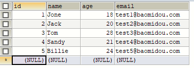

MyBatisPlus
一、简介
(一)、MyBatisPlus 介绍

MyBatis-Plus(简称 MP),是一个 MyBatis 的增强工具包，只做增强不做改变. 为简化开 发工作、提高生产率而生 我们的愿景是成为 Mybatis 最好的搭档，就像 魂斗罗 中的 1P、2P，基友搭配，效率 翻倍。
(二)、代码及文档发布地址
官方地址: http://mp.baomidou.com
代码发布地址:
Github: https://github.com/baomidou/mybatis-plus
Gitee: https://gitee.com/baomidou/mybatis-plus
文档发布地址: http://mp.baomidou.com/#/?id=%E7%AE%80%E4%BB%8B
二、搭建环境并测试
(一)、数据库
1CREATE DATABASE `mybatis_plus`;2USE `mybatis_plus`;3CREATE TABLE `user` (4 `id` BIGINT(20) NOT NULL COMMENT '主键ID', 5 `name` VARCHAR(30) DEFAULT NULL COMMENT '姓名', 6 `age` INT(11) DEFAULT NULL COMMENT '年龄', 7 `email` VARCHAR(50) DEFAULT NULL COMMENT '邮箱', 8 PRIMARY KEY (`id`)9) ENGINE=INNODB DEFAULT CHARSET=utf8;10INSERT INTO USER (id, NAME, age, email) VALUES11(1, 'Jone', 18, 'test1@baomidou.com'),12(2, 'Jack', 20, 'test2@baomidou.com'),13(3, 'Tom', 28, 'test3@baomidou.com'),14(4, 'Sandy', 21, 'test4@baomidou.com'),15(5, 'Billie', 24, 'test5@baomidou.com');(二)、创建SpringBoot工程
(三)、导入依赖
x1 <!--MyBatis-plus启动器-->2 <dependency>3 <groupId>com.baomidou</groupId>4 <artifactId>mybatis-plus-boot-starter</artifactId>5 <version>3.5.1</version>6 </dependency>7
8 <!--lombok用于简化实体类开发-->9 <dependency>10 <groupId>org.projectlombok</groupId>11 <artifactId>lombok</artifactId>12 <optional>true</optional>13 </dependency>14
15 <!--mysql驱动-->16 <dependency>17 <groupId>mysql</groupId>18 <artifactId>mysql-connector-java</artifactId>19 </dependency>20</dependencies>(四)、yaml
xxxxxxxxxx81# 数据库连接2spring3 datasource4 driver-class-namecom.mysql.cj.jdbc.Driver5 urljdbcmysql//localhost3306/mybatis_plus?serverTimezone=GMT%2B8&characterEncoding=utf-8&useSSL=false6 usernameroot7 passwordQwer12348 typecom.zaxxer.hikari.HikariDataSource注意:
1、驱动类driver-class-name
spring boot 2.0(内置jdbc5驱动)，驱动类使用:
driver-class-name: com.mysql.jdbc.Driver
spring boot 2.1及以上(内置jdbc8驱动)，驱动类使用:
driver-class-name: com.mysql.cj.jdbc.Driver
否则运行测试用例的时候会有 WARN 信息
2、连接地址url
MySQL5.7版本的url:
jdbc:mysql://localhost:3306/mybatis_plus?characterEncoding=utf-8&useSSL=false
MySQL8.0版本的url:
jdbc:mysql://localhost:3306/mybatis_plus?serverTimezone=GMT%2B8&characterEncoding=utf-8&useSSL=false
否则运行测试用例报告如下错误:
java.sql.SQLException: The server time zone value 'ÖÐ1ú±ê×1⁄4ʱ1⁄4ä' is unrecognized or represents more
(五)、实体类
xxxxxxxxxx91public class User {4
5 private Long id;6 private String name;7 private Integer age;8 private String email;9}(六)、创建Mapper继承BaseMapper
xxxxxxxxxx31public interface UserMapper extends BaseMapper<User> {3}(七)、加入日志
xxxxxxxxxx31mybatis-plus2 configuration3 log-implorg.apache.ibatis.logging.stdout.StdOutImpl(八)、测试
xxxxxxxxxx121class MybatisPlusApplicationTests {3
4 5 private UserMapper userMapper;6
7 8 void contextLoads() {9 List<User> users = userMapper.selectList(null);10 users.forEach(System.out::println);11 }12}三、基本的CRUD
(一)、增
添加一条数据
xxxxxxxxxx101void contextLoads() {3 User user = new User();4 user.setName("张三");5 user.setAge(12);6 user.setEmail("2992455524@qq.com");7 int result = userMapper.insert(user);8 System.out.println("result:"+result);9 System.out.println("id =" + user.getId());10}(二)、删
1、根据id条件单个删除
xxxxxxxxxx71void contextLoads() {3 User user = new User();4 user.setId(1507938155972530177L);5 int result = userMapper.deleteById(user);6 System.out.println("result:"+result);7}
2、删除条件多个删除
xxxxxxxxxx81void contextLoads() {3 User user = new User();4 user.setId(1507938155972530177L);5 List<Long> list = Arrays.asList(1L,2L,3L);6 int result = userMapper.deleteBatchIds(list);7 System.out.println("result:"+result);8}

3、通过Map删除
重新添加一次数据
xxxxxxxxxx61INSERT INTO USER (id, NAME, age, email) VALUES2(1, 'Jone', 18, 'test1@baomidou.com'),3(2, 'Jack', 20, 'test2@baomidou.com'),4(3, 'Tom', 28, 'test3@baomidou.com'),5(4, 'Sandy', 21, 'test4@baomidou.com'),6(5, 'Billie', 24, 'test5@baomidou.com');编写java代码
xxxxxxxxxx81void contextLoads() {3 Map<String,Object> map = new HashMap<>();4 map.put("name","tom");5 map.put("age", 28);6 int result = userMapper.deleteByMap(map);7 System.out.println("result:"+result);8}(三)、查
1、根据id查询信息
xxxxxxxxxx51void contextLoads() {3 User user1 = userMapper.selectById(1);4 System.out.println("result:"+user1);5}
2、根据多个id查询信息
xxxxxxxxxx61void contextLoads() {3 List<Long> list = Arrays.asList(1L,2L);4 List<User> users = userMapper.selectBatchIds(list);5 users.forEach(System.out::println);6}3、根据条件查询单个信息
xxxxxxxxxx81void contextLoads() {3 Map<String, Object> map = new HashMap<>();4 map.put("name","Jone");5 map.put("age",18);6 List<User> users = userMapper.selectByMap(map);7 users.forEach(System.out::println);8}
4、查询所有信息
xxxxxxxxxx51void contextLoads() {3 List<User> users = userMapper.selectList(null);4 users.forEach(System.out::println);5}
(四)、改
根据id修改内容
xxxxxxxxxx101void contextLoads() {3 User user = new User();4 user.setId(1L);5 user.setName("小马");6 user.setAge(23);7 user.setEmail("2992455524@qq.com");8 int i = userMapper.updateById(user);9 System.out.println(i);10}
(五)、自定义SQL语句
1、DAO
xxxxxxxxxx51public interface UserMapper extends BaseMapper<User> {3
4 User mySelectById(int id);5}2、Mapper
xxxxxxxxxx81 2<mapper namespace="com.ma.mybatisplus.mapper.UserMapper" >4
5 <select id="mySelectById" parameterType="integer" resultType="com.ma.mybatisplus.pojo.User">6 select id,name,age,email from user where id = #{id}7 </select>8</mapper>3、测试代码
xxxxxxxxxx51void contextLoads() {3 User user = userMapper.mySelectById(1);4 System.out.println(user);5}(六)、实现Service层
1、Service
xxxxxxxxxx21public interface UserService extends IService<User> {2}2、实现类
xxxxxxxxxx21public class UserServiceImpl extends ServiceImpl<UserMapper, User> implements UserService {2}3、测试查询总条数
xxxxxxxxxx81private UserService userService;3
4void contextLoads() {6 long count = userService.count();7 System.out.println(count);8}4、测试批量插入数据
xxxxxxxxxx111void contextLoads() {3 List<User> list = new ArrayList<>();4 for (int i=0;i<=10;i++){5 User user = new User(10L+i, "张三"+i, 13+i, "aaaaa"+i+"@qq.com");6 list.add(user);7 }8
9 boolean b = userService.saveBatch(list);10 System.out.println(b);11}

四、常用注解
(一)、@TableName
1、概念
此注解解决的问题是:当你的实体类和数据库中的表名不一致时mybatis-plus会报错,然后使用@TableName注解设置Value值为数据库表名就可以解决问题
2、使用
- 先将数据库名改为t_user

- 然后使用@TableName注解
xxxxxxxxxx111("t_user")5public class user {6
7 private Long id;8 private String name;9 private Integer age;10 private String email;11}3、测试
xxxxxxxxxx51void contextLoads() {3 List<Admin> admins = userMapper.selectList(null);4 admins.forEach(System.out::println);5}
4、使用全局前缀
把实体类的@TableName去掉然后在application中添加
xxxxxxxxxx41mybatis-plus2 global-config3 db-config4 table-prefixt_再测试
(二)、@Tableld
1、概念
mybatis-plus默认将id作为主键,通过雪花算法生成id,如果吧id改为uid的话mybatis-plus就不认识了,抛出异常
2、使用
将实体类中的id添加注解
xxxxxxxxxx111public class User {5
6 ("uid")7 private Long id;8 private String name;9 private Integer age;10 private String email;11}把数据库主键改为uid

3、测试
xxxxxxxxxx91void contextLoads() {3 User user = new User();4 user.setName("张三");5 user.setAge(12);6 user.setEmail("2992455524@qq.com");7 int result = userMapper.insert(user);8 System.out.println("result:"+result);9}4、TableId的2个属性
value:对应数据库主键的字段
type:生成的算法是什么
- IdType.ASSIGN_ID(雪花算法)
- IdType.AUTO(自增算法)
5、配置全局主键生成策略
xxxxxxxxxx51mybatis-plus2 global-config3 db-config4 # 设置统一的主键生成策略5 id-typeauto(三)、@TableField
1、概念
解决实体类属性和数据库字段不一致问题
2、使用
将name改为username添加注解
xxxxxxxxxx121public class User {5
6 ("uid")7 private Long uid;8 ("name")9 private String userName;10 private Integer age;11 private String email;12}3、测试
xxxxxxxxxx91void contextLoads() {3 User user = new User();4 user.setUserName("张三");5 user.setAge(12);6 user.setEmail("2992455524@qq.com");7 int result = userMapper.insert(user);8 System.out.println("result:"+result);9}

(四)、@TableLogic
1、概念
有的时候删除不是真的删除,而是将一个数据库中某个字段修改,比如0是未删除1是逻辑删除,当你逻辑删除一条数据的时候,mybatis-plus会自动过滤这个数据,并如果使用mybatis-plus删除数据的时候delete语句会变成updata更新逻辑删除字段
2、使用
数据库添加新列is_deleted

实体类添加新属性
xxxxxxxxxx131public class User {5
6 ("uid")7 private Long uid;8 ("name")9 private String userName;10 private Integer age;11 private String email;12 private Integer isDeleted;13}3、测试删除并查询数据
xxxxxxxxxx71void contextLoads() {3 User user = new User();4 user.setUid(1507957439037825026L);5 int result = userMapper.deleteById(user);6 System.out.println("result:" + result);7}delete变为了update

数据库也为真正删除
再次查询所有信息,自动过滤了1的信息
五、条件构造器和常用接口
(一)、wrapper介绍

Wrapper ： 条件构造抽象类，最顶端父类
AbstractWrapper ： 用于查询条件封装，生成 sql 的 where 条件
- QueryWrapper ： 查询条件封装
- UpdateWrapper ： Update 条件封装
- AbstractLambdaWrapper ： 使用Lambda 语法
- LambdaQueryWrapper ：用于Lambda语法使用的查询Wrapper
- LambdaUpdateWrapper ： Lambda 更新封装Wrapper

(二)、QueryWrapper
1、组装查询条件
xxxxxxxxxx81void contextLoads() {3 //查询用户包含a,年龄在20到30之间，邮箱信息不为null的用户信息4 QueryWrapper<User> queryWrapper = new QueryWrapper<>();5 queryWrapper.like("name","a").between("age", 20, 30).isNotNull("email");6 List<User> users = userMapper.selectList(queryWrapper);7 users.forEach(System.out::println);8}
2、组装排序条件
xxxxxxxxxx81void contextLoads() {3 //组装排序条件 查询用户信息，按照年龄的降序排序，若年龄相同，则按照id升序排序4 QueryWrapper<User> queryWrapper = new QueryWrapper<>();5 queryWrapper.orderByAsc("age").orderByDesc("uid");6 List<User> users = userMapper.selectList(queryWrapper);7 users.forEach(System.out::println);8}
3、组装删除条件
数据库添加邮箱为空的记录

xxxxxxxxxx81void contextLoads() {3 //组装删除条件 删除邮箱地址为null的用户信息4 QueryWrapper<User> queryWrapper = new QueryWrapper<>();5 queryWrapper.isNull("email");6 int users = userMapper.delete(queryWrapper);7 System.out.println(users);8}删除后

4、组装修改条件
xxxxxxxxxx101void contextLoads() {3 // 组装修改条件 将(年龄大于20并且用户名中包含有a)或邮箱为null的用户信息修改4 QueryWrapper<User> queryWrapper = new QueryWrapper<>();5 queryWrapper.between("age", 20, 30).like("name","a").or().isNull("email");6 User user = new User();7 user.setUserName("条件修改名");8 int users = userMapper.update(user, queryWrapper);9 System.out.println(users);10}

5、条件的优先级
修改数据库添加条件数据

xxxxxxxxxx101void contextLoads() {3 // 将用户名中包含a并且(年龄大于20或邮箱为null)的用户信息修改4 QueryWrapper<User> queryWrapper = new QueryWrapper<>();5 queryWrapper.like("name", "a").and(i->i.gt("age", 20).isNull("email"));6 User user = new User();7 user.setUserName("条件修改名");8 int users = userMapper.update(user, queryWrapper);9 System.out.println(users);10}
6、组装select子句
xxxxxxxxxx81void contextLoads() {3 // 组装select字句 查询用户名的用户名、年龄、邮箱信息4 QueryWrapper<User> queryWrapper = new QueryWrapper<>();5 queryWrapper.select("name","age","email");6 List<Map<String, Object>> users = userMapper.selectMaps(queryWrapper);7 users.forEach(System.out::println);8}
7、实现子查询
xxxxxxxxxx81void contextLoads() {3 // 组装select字句 查询用户名的用户名、年龄、邮箱信息4 QueryWrapper<User> queryWrapper = new QueryWrapper<>();5 queryWrapper.inSql("age","select age from t_user where age>20");6 List<User> users = userMapper.selectList(queryWrapper);7 users.forEach(System.out::println);8}
(三)、UpdataWrapper
添加数据

xxxxxxxxxx91void contextLoads() {3 UpdateWrapper<User> updateWrapper = new UpdateWrapper<>();4 updateWrapper.like("name", "a")5 .and(i->i.gt("age", 20).or().isNull("email"));6 updateWrapper.set("name", "updateWrapper").set("email", "2992455524@qq.com");7 int update = userMapper.update(null, updateWrapper);8 System.out.println(update);9}

(四)、Condition
1、概念
在真正开发的过程中，组装条件是常见的功能，而这些条件数据来源于用户输入，是可选的，因此我们在组装这些条件时，必须先判断用户是否选择了这些条件，若选择则需要组装该条件，若
没有选择则一定不能组装，以免影响SQL执行的结果
2、本来的判断
需要一步一步判断然后再操作数据库
xxxxxxxxxx191void contextLoads() {3 String username = "a";4 Integer ageBegin = null;5 Integer ageEnd = 30;6 QueryWrapper<User> queryWrapper = new QueryWrapper<>();7 if (StringUtils.isNotBlank(username)) {8 // isNotBlank判断某个字符串是否不为空字符串、不为null、不为空白符9 queryWrapper.like("user_name", username);10 }11 if (ageBegin != null) {12 queryWrapper.gt("age", ageBegin);13 }14 if (ageEnd != null) {15 queryWrapper.le("age", ageEnd);16 }17 List<User> list = userMapper.selectList(queryWrapper);18 list.forEach(System.out::println);19}3、Mybatis的简写
xxxxxxxxxx151void contextLoads() {3 String username = "a";4 Integer ageBegin = null;5 Integer ageEnd = 30;6 QueryWrapper<User> queryWrapper = new QueryWrapper<>();7 // 判断是否不为空,null,空白字符,如果都没有就查询是否user_name包含username8 queryWrapper.like(StringUtils.isNotBlank(username), "user_name", username)9 // 判断ageBegin是否等于空,如果不等于空判断age是否大于ageBegin10 .gt(ageBegin != null, "age", ageBegin)11 // 判断ageEnd是否为空,如果不为空判断age是否小于ageEnd12 .le(ageEnd != null, "age", ageEnd);13 List<User> list = userMapper.selectList(queryWrapper);14 list.forEach(System.out::println);15}(五)、LambdaQueryWrapper
为了不手动写数据库字段防止错误,使用lambda表达式获取实体类属性,然后mybatis-plus会自动去数据库寻找对应的字段然后判断
xxxxxxxxxx151void contextLoads() {3 String username = "a";4 Integer ageBegin = null;5 Integer ageEnd = 30;6 LambdaQueryWrapper<User> queryWrapper = new LambdaQueryWrapper<>();7 // 判断是否不为空,null,空白字符,如果都没有就查询是否user_name包含username8 queryWrapper.like(StringUtils.isNotBlank(username), User::getUserName, username)9 // 判断ageBegin是否等于空,如果不等于空判断age是否大于ageBegin10 .gt(ageBegin != null, User::getAge, ageBegin)11 // 判断ageEnd是否为空,如果不为空判断age是否小于ageEnd12 .le(ageEnd != null, User::getAge, ageEnd);13 List<User> list = userMapper.selectList(queryWrapper);14 list.forEach(System.out::println);15}(六)、LambdaUpdateWrapper
lambdaUpdateWrapper的意思和lambdaQueryWrapper一样,为了防止写错数据库字段
xxxxxxxxxx101void contextLoads() {3 LambdaUpdateWrapper<User> updateWrapper = new LambdaUpdateWrapper<>();4 updateWrapper.like(User::getUserName, "a")5 //lambda表达式内的逻辑优先运算6 .and(i -> i.gt(User::getAge, 20).or().isNull(User::getEmail));7 updateWrapper.set(User::getUserName, "小黑").set(User::getEmail, "abc@atguigu.com");8 int result = userMapper.update(null, updateWrapper);9 System.out.println("result = " + result);10}六、插件
(一)、分页插件
MyBatis Plus自带分页插件，只要简单的配置即可实现分页功能
1、添加配置类
xxxxxxxxxx101public class MybatisPageConfig {3
4 5 public MybatisPlusInterceptor mybatisPlusInterceptor() {6 MybatisPlusInterceptor interceptor = new MybatisPlusInterceptor();7 interceptor.addInnerInterceptor(new PaginationInnerInterceptor(DbType.H2));8 return interceptor;9 }10}2、数据库添加数据
xxxxxxxxxx101void contextLoads() {3 List<User> list = new ArrayList<>();4 for (int i=0;i<=10;i++){5 User user = new User(10L+i, "张三"+i, 13+i, "aaaaa"+i+"@qq.com",0);6 list.add(user);7 }8 boolean b = userService.saveBatch(list);9 System.out.println(b);10}
3、测试
xxxxxxxxxx101void contextLoads() {3 Page<User> page = new Page<>(2, 3);4 Page<User> userPage = userMapper.selectPage(page, null);5 System.out.println(userPage.getRecords());6 System.out.println("总页数:" + page.getPages());7 System.out.println("总记录数" + page.getTotal());8 System.out.println("是否有上一页" + page.hasNext());9 System.out.println("是否有下一页:" + page.hasPrevious());10}
4、自定义分页插件
Dao层
xxxxxxxxxx41public interface UserMapper extends BaseMapper<User> {3 Page<User> selectPageVo(("page") Page<User> page, ("age") Integer age);4}Mapper
xxxxxxxxxx81 2<mapper namespace="com.ma.mybatisplus.mapper.UserMapper" >4 <!--Page<User> selectPageVo(@Param("page") Page<User> page, @Param("age") Integer age);-->5 <select id="selectPageVo" resultType="com.ma.mybatisplus.pojo.User">6 select uid ,name ,age,email from t_user where age > #{age}7</select>8</mapper>测试
xxxxxxxxxx141void contextLoads() {3 Page<User> page = new Page<>(1, 5);4 userMapper.selectPageVo(page, 20);5 //获取分页数据6 List<User> list = page.getRecords();7 list.forEach(System.out::println);8 System.out.println("当前页:"+page.getCurrent());9 System.out.println("每页显示的条数:"+page.getSize());10 System.out.println("总记录数:"+page.getTotal());11 System.out.println("总页数:"+page.getPages());12 System.out.println("是否有上一页:"+page.hasPrevious());13 System.out.println("是否有下一页:"+page.hasNext());14}(二)、乐观锁
1、场景
一件商品，成本价是80元，售价是100元。老板先是通知小李，说你去把商品价格增加50元。小
李正在玩游戏，耽搁了一个小时。正好一个小时后，老板觉得商品价格增加到150元，价格太
高，可能会影响销量。又通知小王，你把商品价格降低30元。
此时，小李和小王同时操作商品后台系统。小李操作的时候，系统先取出商品价格100元；小王
也在操作，取出的商品价格也是100元。小李将价格加了50元，并将100+50=150元存入了数据
库；小王将商品减了30元，并将100-30=70元存入了数据库。是的，如果没有锁，小李的操作就
完全被小王的覆盖了。
现在商品价格是70元，比成本价低10元。几分钟后，这个商品很快出售了1千多件商品，老板亏1
万多。
2、乐观锁和悲观锁
上面的故事，如果是乐观锁，小王保存价格前，会检查下价格是否被人修改过了。如果被修改过了，则重新取出的被修改后的价格，150元，这样他会将120元存入数据库。
如果是悲观锁，小李取出数据后，小王只能等小李操作完之后，才能对价格进行操作，也会保证
最终的价格是120元。
3、创建新的数据表,并添加数据
xxxxxxxxxx71CREATE TABLE t_product2(3 id BIGINT(20) NOT NULL COMMENT '主键ID',4 NAME VARCHAR(30) NULL DEFAULT NULL COMMENT '商品名称', price INT(11) DEFAULT 0 COMMENT '价格',5 VERSION INT(11) DEFAULT 0 COMMENT '乐观锁版本号', PRIMARY KEY (id)6);7INSERT INTO t_product (id, NAME, price) VALUES (1, '外星人笔记本', 100);4、添加实体类
xxxxxxxxxx71public class Product {3 private Long id;4 private String name;5 private Integer price;6 private Integer version;7}5、Dao接口
xxxxxxxxxx41public interface ProductMapper extends BaseMapper<Product> {3
4}6、测试
xxxxxxxxxx251private ProductMapper productMapper;3
4void contextLoads() {6 // 1.小李查询商品价格7 Product productLi = productMapper.selectById(1);8 System.out.println("小李查询的商品价格:" + productLi.getPrice());9
10 // 2.小王查询商品价格11 Product productWang = productMapper.selectById(1);12 System.out.println("小王查询的商品价格:" + productWang.getPrice());13
14 // 3.小李商品价格+5015 productLi.setPrice(productLi.getPrice() + 50);16 productMapper.updateById(productLi);17
18 // 4.小王将商品价格-3019 productWang.setPrice(productWang.getPrice() - 30);20 int result = productMapper.updateById(productWang);21
22 // 5.老板查询商品价格23 Product productBoss = productMapper.selectById(1);24 System.out.println("老板查询的商品价格:" + productBoss.getPrice());25}最后结果应该是120,由于并发操作所以变为70

7、启动乐观锁
数据库添加version字段
实体类添加属性
xxxxxxxxxx812public class Product {3private Long id;4private String name;5private Integer price;67private Integer version;8}添加配置类信息
xxxxxxxxxx1112public class MybatisPageConfig {345public MybatisPlusInterceptor mybatisPlusInterceptor() {6MybatisPlusInterceptor interceptor = new MybatisPlusInterceptor();7interceptor.addInnerInterceptor(new PaginationInnerInterceptor(DbType.H2));8interceptor.addInnerInterceptor(new OptimisticLockerInnerInterceptor());9return interceptor;10}11}运行测试

乐观锁生效
七、通用枚举
(一)、概念
表中的有些字段值是固定的，例如性别(男或女)，此时我们可以使用MyBatis-Plus的通用枚举 来实现
(二)、实现
1、数据库添加sex字段
2、创建枚举类
xxxxxxxxxx151public enum SexEnum {3
4 MALE(1,"男"),5 FEMALE(2,"女");6
7 8 private final Integer sex;9 private final String sexName;10
11 SexEnum(Integer sex, String sexName) {12 this.sex = sex;13 this.sexName = sexName;14 }15}3、包扫描枚举类
xxxxxxxxxx71mybatis-plus2 configuration3 log-implorg.apache.ibatis.logging.stdout.StdOutImpl4 global-config5 db-config6 table-prefixt_7 type-enums-packagecom\ma\mybatisplus\enums4、测试
xxxxxxxxxx91void contextLoads() {3 User user = new User();4 user.setUserName("admin");5 user.setAge(33);6 user.setSex(SexEnum.MALE);7 int result = userMapper.insert(user);8 System.out.println("result = " + result);9}查询数据
xxxxxxxxxx51void contextLoads() {3 User user = userMapper.selectById(1508603118709989377L);4 System.out.println(user);5}
八、代码生成器
(一)、引入依赖
xxxxxxxxxx121<!--mybatis代码生成插件-->2<dependency>3 <groupId>com.baomidou</groupId>4 <artifactId>mybatis-plus-generator</artifactId>5 <version>3.5.1</version>6</dependency>7<!--小弟-->8<dependency>9 <groupId>org.freemarker</groupId>10 <artifactId>freemarker</artifactId>11 <version>2.3.31</version>12</dependency>(二)、创建表
xxxxxxxxxx51CREATE TABLE t_admin(2 id INT,3 username VARCHAR(20),4 PASSWORD VARCHAR(20)5)(三)、生成类
xxxxxxxxxx251public class FastAutoGeneratorTest {2 public static void main(String[] args) {3 // 设置我们需要创建在哪的路径4 String xmlPath = "F:\\mybatis-plus\\src\\main\\resources\\mapper";5 String Path = "F:\\mybatis-plus\\src\\main\\java";6 // 数据源7 FastAutoGenerator.create("jdbc:mysql://localhost:3306/mybatis_plus?serverTimezone=GMT%2B8&characterEncoding=utf-8&useSSL=false", "root", "Qwer1234")8 .globalConfig(builder -> {9 builder.author("ma") // 设置作者10 // .enableSwagger() // 开启 swagger 模式11 .fileOverride() // 覆盖已生成文件12 .outputDir(Path); // 指定输出目录13 })14 .packageConfig(builder -> {15 builder.parent("com.ma") // 设置父包名16 .moduleName("mybatisplus") // 设置父包模块名17 .pathInfo(Collections.singletonMap(OutputFile.mapperXml, xmlPath)); // 设置mapperXml生成路径18 })19 .strategyConfig(builder -> {20 builder.addInclude("t_admin") // 设置需要生成的表名21 .addTablePrefix("t_", "c_"); // 设置过滤表前缀22 }).templateEngine(new FreemarkerTemplateEngine()) // 使用Freemarker 引擎模板，默认的是Velocity引擎模板23 .execute();24 }25}(四)、查看

九、多数据源
(一)、创建数据库及表
xxxxxxxxxx161# 创建新的数据库2CREATE DATABASE `mybatis_plus_1`;3# 进入数据库4use `mybatis_plus_1`;5# 创建product表6CREATE TABLE t_product7(8 id BIGINT(20) NOT NULL COMMENT '主键ID',9 name VARCHAR(30) NULL DEFAULT NULL COMMENT '商品名称', price INT(11) DEFAULT 0 COMMENT '价格',10 version INT(11) DEFAULT 0 COMMENT '乐观锁版本号', PRIMARY KEY (id)11);12# 插入数据13INSERT INTO product (id, NAME, price) VALUES (1, '外星人笔记本', 100);14# 删除mybatis-plus表中的product表15use mybatis_plus;16DROP TABLE IF EXISTS product;(二)、引入依赖
xxxxxxxxxx61<!--多数据源依赖-->2<dependency>3 <groupId>com.baomidou</groupId>4 <artifactId>dynamic-datasource-spring-boot-starter</artifactId>5 <version>3.5.0</version>6</dependency>(三)、application
xxxxxxxxxx201spring2 datasource3 # 配置数据源信息 datasource:4 dynamic5 # 设置默认的数据源或者数据源组,默认值即为master6 primarymaster7 # true的话精准查询如果没找到报错,false如果没找到用master8 strictfalse9 datasource10 master11 urljdbcmysql//localhost3306/mybatis_plus?serverTimezone=GMT%2B8&characterEncoding=utf-8&useSSL=false12 driver-class-namecom.mysql.cj.jdbc.Driver13 usernameroot14 password'Qwer1234'15 slave_116 # 我的数据库是8.0.27 5版本的可以使用jdbc:mysql://localhost:3306/mybatis_plus?characterEncoding=utf-8&useSSL=false17 urljdbcmysql//localhost3306/mybatis_plus_1?serverTimezone=GMT%2B8&characterEncoding=utf-8&useSSL=false18 driver-class-namecom.mysql.cj.jdbc.Driver19 usernameroot20 password'Qwer1234'(四)、Service实现类添加注解
UserServiceImpl
xxxxxxxxxx41("master")3public class UserServiceImpl extends ServiceImpl<UserMapper, User> implements UserService {4}ProductServiceImpl
xxxxxxxxxx41("slave_1")3public class ProductServiceImpl extends ServiceImpl<ProductMapper, Product> implements ProductService {4}(五)、测试
xxxxxxxxxx161class MybatisPlusApplicationTests {3
4 5 private UserService userService;6 7 private ProductService productService;8
9 10 void contextLoads() {11 Product product = productService.getById(1);12 User user = userService.getById(1);13 System.out.println(product);14 System.out.println(user);15 }16}十、MybatisX插件